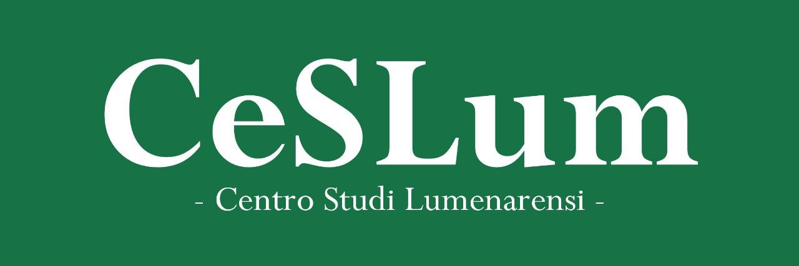

Ultimi Studi e Pubblicazioni
Esplora l'archivio completo degli articoli scientifici, saggi storici ed editoriali pubblicati dalla nostra redazione.

Il Cuore Culturale della Leonidia
Fondato all'interno della Repubblica di Lumenaria, il Centro Studi Lumenarensi (CeSLum) nasce con l'obiettivo di studiare, mappare e preservare la complessa geopolitica e l'attività culturale del mondo micronazionale Leonense.
Attraverso indagini statistiche, articoli scientifici e analisi socio-politiche rigorose, ci impegniamo a fornire una lente obiettiva per comprendere l'evoluzione delle micronazioni, le loro ideologie e il loro ciclo vitale.
Attualmente, il CeSLum funge da rivista ufficiale del Consiglio della Comunità Leonense, continuando la sua missione di divulgazione accademica e preservazione storica attraverso iniziative come il progetto Alexandrea e la Biblioteca Lumenarense.